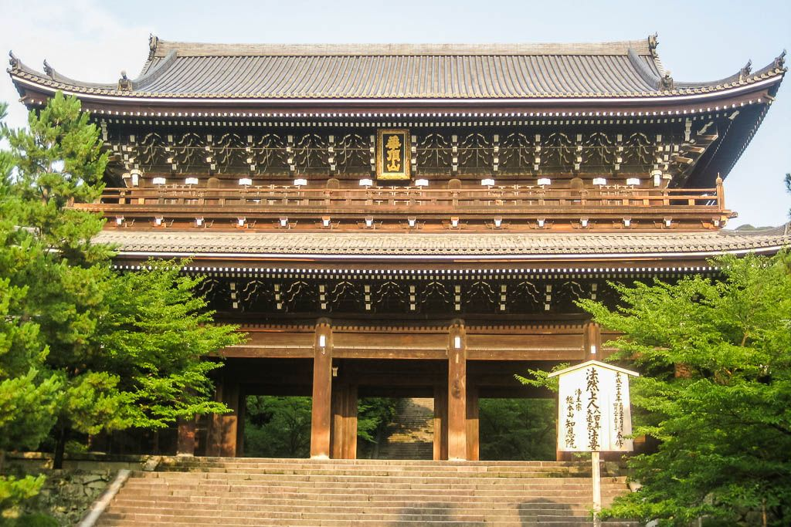
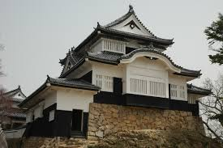

Castillo Tsuruga

Horario: 08:30 - 17:00
Leer reseña histórica
Este castillo fue un bastión clave durante la Guerra Boshin en 1868. Su resistencia simboliza el fin de la era de los samuráis.
Explorando los castillos de la era Samurái
Japón conserva estructuras que narran siglos de estrategia militar y arte arquitectónico.
Horario: 08:30 - 17:00
Este castillo fue un bastión clave durante la Guerra Boshin en 1868. Su resistencia simboliza el fin de la era de los samuráis.

Uno de los distritos históricos mejor conservados de Japón.Horario: Acceso libre (Templos: 09:00 - 17:00)
Este distrito evoca la atmósfera del antiguo Kioto. Ha sido el centro de la cultura y la religión durante siglos, sobreviviendo a numerosos incendios y guerras civiles.

Horario: 09:00 - 17:00 (Cierre varía según estación)
Construido por Kato Yoshiaki en 1603, es un complejo defensivo magistral situado a 132 metros de altura, ofreciendo una vista estratégica de todo el mar interior de Seto.